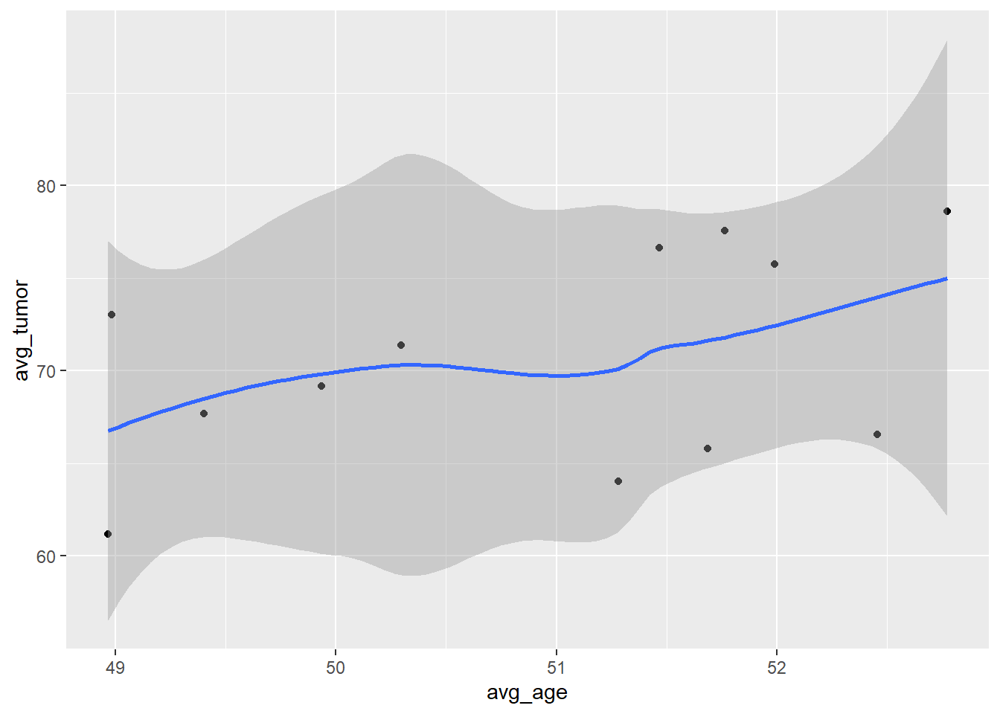

Chapter 5 Pipe Operator
5.1 파이프 연산자 : %>%
library(tidyverse)데이터 관리 업무는 최종적으로 바람직한 데이터 세트를 만들기 위한 여러 단계를 포함한다. 중간 단계에서 종종 신경을 쓰거나 계속 유지하기 위한 계획없이 데이터 세트들이 생성된다. 이러한 다단계 업무를 위해서 파이프 연산자가 유용하고, 시간을 절약해주고, 효율적인 단축 기록을 제공한다.
데이터 세트의 이름을 붙이는 것은 생각하기에도 시간이 소요되고, 코딩도 난잡하게 만든다. 이때 파이프 연산자는 데이터 세트의 이름보다 사용되는 함수에 집중하게 함으로써 코드를 더 쉽게 이해할 수 있게 해준다.
파이프 연산자 %>%는 CTRL-SHIFT-M (CMD-SHIFT-M on a Mac)으로 작성될 수 있다. 파이프 연산자는 코드를 읽을 때 “그런 다음(then)”으로 표현될 수 있다. 이 연산자는 (`library(tidyverse)를 로드할 때 자동으로 로드되는) magrittr 패키지로 로드된다.
파이프 연산자는 이 연산자의 왼쪽에 있는 데이터 세트를 이 연산자의 오른쪽에 있는 함수로 전달(pipe)해 준다.
x %>% f(y)코드는 f(x,y)로 변환될 수 있는데, 이는 x가 디폴트로 f() 함수의 첫 번째 인수가 된다는 것이다. 이 함수가 데이터 프레임을 반환하면, 이 데이터 프레임을 다른 함수로 전달할 수 있다. 따라서, x %>% f(y) %>% g(z)는 g(f(x,y), z)로 변환될 수 있다.
5.1.1 파이프 연산자의 사용 예
첫 번째 예로, 40세 이하의 여성으로 구성된 데이터 세트를 생성하는데 age변수와 pain 변수 만을 선택하고 싶다고 하자. 이 작업을 다음과 같이 두 단계로 수행할 수 있다:
d <- read_csv("data5/patient_pt1_dm.csv")##
## -- Column specification --------------------------------------------------------
## cols(
## .default = col_double(),
## hospital = col_character(),
## docid = col_character(),
## dis_date = col_character(),
## sex = col_character(),
## familyhx = col_character(),
## smokinghx = col_character(),
## cancerstage = col_character(),
## wbc = col_character()
## )
## i Use `spec()` for the full column specifications.# a dataset of age and pain for females younger than 40
f40 <- filter(d, sex=="female" & age < 40)
f40_small <- select(f40, age, pain)
f40_small## # A tibble: 2 x 2
## age pain
## <dbl> <dbl>
## 1 37.3 8
## 2 39.6 5작업이 아주 잘 진행되었지만, 중간단계의 데이터 세트인 f40은 우리의 관심이 대상이 아니며 불필요하게 메모리와 작업공간을 차지하고 있다.
따라서 파이프 연산자(%>%)를 이용하면 이러한 불필요한 부분을 제거할 수 있다:
# start with d, then filter rows, then select variables
f40_small <- d %>%
filter(sex == "female" & age < 40) %>%
select(age, pain)
f40_small## # A tibble: 2 x 2
## age pain
## <dbl> <dbl>
## 1 37.3 8
## 2 39.6 5중간단계의 데이터 세트를 생성하지 않으며, 중간 단계에서 데이터 세트의 이름도 필요하지 않다. 또한 데이터 세트를 변환하는 filter() 함수와 select() 함수를 더 쉽게 이해할 수 있게 해준다.
5.1.2 또 다른 예
파이핑은 또한 일련의 명령어의 연결을 좀더 즉각적으로 이해할 수 있게 만들어 준다.
# create a plot of average age vs tumor size
# by doctors, for doctors with more than 5 patients (with less than or equal to 55 average age)
g1 <- d %>%
group_by(docid) %>%
summarise(n_pat=n(),
avg_age=mean(age),
avg_tumor=mean(tumorsize)) %>%
filter(n_pat > 5 & avg_age <=55) %>%
ggplot(aes(x=avg_age, y=avg_tumor)) + geom_point() +
geom_smooth() ## `summarise()` ungrouping output (override with `.groups` argument)g1## `geom_smooth()` using method = 'loess' and formula 'y ~ x'
5.2 파이프된 명령어에 ‘.’ 사용하기
x %>% f(y,.) 는 f(y,x)로 변환된다. 데이터 세트 x 대신에 ‘.’을 사용할 수 있다.
예를 들어, lm()과 같은 모델링 함수는 첫 번째 인수가 데이터 세트가 아닌 모델 공식이 되는게 일반적이다. 그리고, 파이핑 체인에서의 데이터 세트를 나타내는 의미로 ‘.’을 사용할 수 있다:
d %>%
filter(age < 40) %>%
lm(tumorsize ~ age, data=.) # the . is the filtered dataset##
## Call:
## lm(formula = tumorsize ~ age, data = .)
##
## Coefficients:
## (Intercept) age
## -78.219 4.116